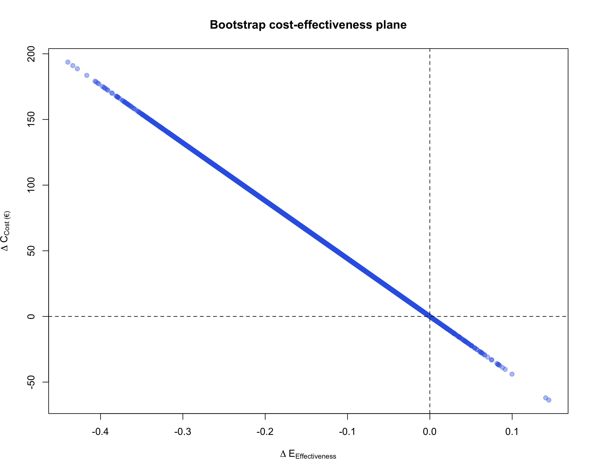

Cost-Effectiveness of the REPPOP Pediatric Obesity Management Program
Biostatistician & Epidemiologist specializing in health data analytics, statistical modeling, large-scale data management, and clinical research.
Author
Ousmane Diallo
Published
November 10, 2025
Keywords
biostatistics, epidemiology, health data science, SAS programming, CDISC standards, clinical trials, real-world evidence
Overview
In the Aquitaine region of France, as part of the Nutrition, Prevention, and Child Health Program—the regional extension of the National Nutrition and Health Program (PNNS) for children and adolescents—a harmonized screening and management approach for pediatric overweight and obesity was developed.
This initiative led to the creation of the REPPOP network (Réseau de Prévention et de Prise en charge de l’Obésité Pédiatrique), an integrated and multidisciplinary care system operating in the Gironde area.
The REPPOP network connects community physicians, hospital practitioners, and public health professionals (including school doctors, nurses, and maternal and child health services) with a central coordination team. Children enrolled in REPPOP receive a two-year multidisciplinary follow-up, including regular medical visits and, when appropriate, nutritional and psychological counseling.
At admission, two inclusion consultations are conducted by the referring REPPOP physician:
Inclusion visit 1: to exclude organic causes of obesity and detect complications.
Inclusion visit 2: to establish an educational and behavioral management plan.
The attending physician and family then define personalized, realistic objectives for the child and determine the most suitable care pathway.
Despite the broad implementation of this coordinated approach, no formal economic evaluation of the REPPOP program had been performed. The objective of this study was therefore to assess the cost-effectiveness of the REPPOP pediatric obesity management strategy compared with no intervention.
Methodology Framework
Data sources
The primary dataset came from the REPPOP cohort study, which followed children with overweight or obesity over a two-year period. This database was used both to simulate the natural history of obesity prior to intervention and to perform the cost-effectiveness analysis. After excluding children with missing data on social difficulties, those followed for more than 3.5 years, and those older than 12 years at inclusion, 354 children remained for analysis. A second data source was a French national study estimating the medical costs associated with obesity, based on the 2002 Health, Health-Care and Insurance Survey (ESPS) linked to the Permanent Sample of Health Insurance Beneficiaries (EPAS), which was used to model long-term efficiency of the REPPOP strategy.
Data summary
The REPPOP cohort included 354 children aged 6–12 years with complete two-year follow-up data.
Baseline and follow-up variables included age, gender, age at onset of overweight, social difficulties, and BMI Z-scores at inclusion and after two years.
These variables were used to simulate counterfactual BMI trajectories and estimate the program’s incremental cost-effectiveness.
Simulation of the Natural History of the Disease (counterfactual)
Because no untreated control group was available, a model-based simulation was built to estimate each child’s BMI Z-score trajectory without the REPPOP intervention.
The growth rate (X) was computed from pre-inclusion trajectories (health records) to reflect the natural history prior to intervention.
Data were observed at two time points — T₀ (baseline) and T + 2 years — including age, gender, social difficulties, and BMI Z-scores.
A two-step modeling process was applied:
The two-year growth rate (X) in BMI Z-score was computed for each child from pre-inclusion data.
This growth rate was then modeled using a multiple linear regression, stratified by age group, with predictors: age at onset of overweight, initial BMI Z-score, social difficulties, and gender.
To incorporate predictive uncertainty, random residuals were drawn from a normal distribution and added to the predicted growth rates, generating individualized simulated Z-scores:
This approach allowed comparing each child’s observed BMI Z-score trajectory (with REPPOP) to their simulated trajectory (no REPPOP). Note: This linear model assumes normality and linearity; sensitivity analyses (e.g., GAM) could address non-linearities.
Example of R code
Model & simulate counterfactual (no REPPOP)
# ============================================================================# Fit linear regression model for 2-year growth rate# Framework: X' = β0 + β1*Age + β2*Z0 + β3*Social + β4*Sex + ε# ============================================================================model_gr <-lm(growth_rate2 ~ age_inc1 + zbmi_incl + social + sex, data = dat)summary(model_gr)# ============================================================================# Extract residual standard error (σ̂) for simulating uncertainty# ============================================================================sigma_hat <-sqrt(sum(residuals(model_gr)^2) / model_gr$df.residual)# ============================================================================# Predict growth rate + draw from normal distribution to add uncertainty# ============================================================================set.seed(123) # Set seed for reproducibility# Predicted growth rate from model (X̂)pred_rate <-predict(model_gr, newdata = dat)# Draw random residuals from normal distribution: ε ~ N(0, σ̂)eps_draw <-rnorm(nrow(dat), mean =0, sd = sigma_hat)# Simulated growth rate with uncertainty: X_sim = X̂ + εrate_sim <- pred_rate + eps_draw# ============================================================================# Counterfactual ZBMI at 2 years under "no REPPOP" scenario# ============================================================================zbmi_cf <- dat$zbmi_incl + rate_sim# ============================================================================# Individual and mean incremental effectiveness# ============================================================================# ΔE_i = Z_noTx(2y) - Z_obs(2y)# Positive value = improvement due to REPPOP interventiondeltaE_i <- zbmi_cf - dat$zbmi_last# Mean incremental effectiveness (average treatment effect)DeltaE_mean <-mean(deltaE_i, na.rm =TRUE)DeltaE_mean
Cost-Effectiveness Analysis
The cost-effectiveness model was conducted from the payer perspective (French national health insurance). In line with recommendations from the Haute Autorité de Santé (HAS), the therapeutic goal in children is not weight loss but rather stabilization or deceleration of BMI growth.
Accordingly, two measures of effectiveness were used:
a normative criterion — stabilization of BMI Z-score (no increase), and
a quantitative criterion — the cost per one-unit reduction in BMI Z-score over two years.
Only direct medical costs were included in the analysis, covering physician, dietitian, psychologist, and inclusion consultations. All costs were expressed in euros (€) and not discounted, given the short (two-year) time horizon of the REPPOP intervention. Costs reflect 2025 tariffs (inflated ~20% from original estimates to account for healthcare inflation).
The incremental cost-effectiveness ratio (ICER) was computed as the difference in mean costs divided by the difference in mean effects between the REPPOP intervention and the “no-intervention” simulated scenario:
\[
ICER \;=\; \frac{\Delta C}{\Delta E}
\]
where ΔC is the incremental cost and ΔE the incremental effectiveness (reduction in BMI Z-score).
R code
Cost-Effectiveness Analysis
# ============================================================================# Calculate ICER (Incremental Cost-Effectiveness Ratio)# ============================================================================# Mean cost per child over 2 years (EUR)mean_cost <-440.51# Point estimate of ICER: Cost per unit of effectiveness gainedICER_point <- mean_cost / DeltaE_mean# Confidence interval for ICER# Note: Division inverts the CI boundsICER_CI <- mean_cost / ci_DeltaE# Display resultslist(N = n, # Sample sizeDeltaE_mean = DeltaE_mean, # Mean incremental effectiveness (point estimate)DeltaE_CI = ci_DeltaE, # 95% CI for incremental effectivenessICER = ICER_point, # Point estimate of ICER (EUR per unit ΔZ)ICER_CI = ICER_CI # 95% CI for ICER)# ============================================================================# Cost-Effectiveness Plane# ============================================================================plot( boot_DeltaE, # ΔE on x-axis (effectiveness)-boot_DeltaE * mean_cost, # ΔC positive = more expensivepch =19, col =rgb(0.2, 0.4, 0.9, 0.4),xlab =expression(Delta*E["Effectiveness"]),ylab =expression(Delta*C["Cost (€)"]),main ="Bootstrap Cost-Effectiveness Plane")# Add reference lines at zeroabline(h =0, v =0, lty =2)
Uncertainty Analysis
To account for sampling uncertainty, a non-parametric bootstrap method was applied with 10,000 replications. In each bootstrap sample, mean costs and mean effects were recalculated, and the ICER was recomputed. The 95% confidence interval for the ICER was derived using the percentile method, by discarding the lowest and highest 2.5% of simulated ICER values.
This approach is recommended when no strong assumptions can be made regarding the distribution of incremental costs and effects. The resulting bootstrap replications were plotted on the cost-effectiveness (CE) plane, illustrating the joint uncertainty around the incremental cost and incremental effectiveness estimates. Alternative methods (e.g., Fieller) could address ratio correlations.
Non-parametric bootstrap
# ICER and uncertainty estimation via non-parametric bootstrapset.seed(2025) # Set seed for reproducibilityB <-10000L # Number of bootstrap replicatesn <-nrow(dat) # Sample size# Perform bootstrap resampling to estimate uncertainty in ΔEboot_DeltaE <-replicate(B, {# Draw bootstrap sample with replacement idx <-sample.int(n, size = n, replace =TRUE)# Re-simulate residuals (ε) for each bootstrap iteration# This propagates predictive uncertainty into the estimates eps_b <-rnorm(length(idx), mean =0, sd = sigma_hat)# Calculate simulated growth rate for bootstrap sample rate_b <-predict(model_gr, newdata = dat[idx, ]) + eps_b# Compute counterfactual Z-score at 2 years (no treatment scenario) zbmi_cf_b <- dat$zbmi_incl[idx] + rate_b# Calculate mean incremental effectiveness for this bootstrap sample# ΔE = Z_counterfactual - Z_observed (positive = beneficial effect)mean(zbmi_cf_b - dat$zbmi_last[idx], na.rm =TRUE)})# Calculate 95% confidence interval for incremental effectivenessci_DeltaE <-quantile(boot_DeltaE, c(0.025, 0.975), na.rm =TRUE)
Efficiency Analysis (Long-Term Cost Offsets)
To estimate the long-term cost savings associated with the REPPOP intervention, we used updated data from the 2024 Asterès study assessing the medical costs attributable to obesity in France (total direct medical ~8 Md€, excess per obese ~1,200€ annually). This provides national estimates of annual direct medical costs associated with obesity, used here to extrapolate the future costs avoided through the REPPOP program.
Assumptions were made regarding the percentage of obesity cases prevented by the intervention and the discount rate applied to future costs. We assumed that 16% of obesity cases were avoided among REPPOP participants, and annual costs were discounted at 2% and 4%, consistent with French health-economic guidelines. Sensitivity: Horizons extended; persistence of effect assumed (supported by 2019 REPPOP long-term data)..
Number of Obesity Cases Prevented
The proportion of obesity cases prevented after two years of REPPOP care was calculated as:
where (N_{}) is the number of children classified as obese at 2 years in the no-intervention (counterfactual) simulation, and (N_{}) is the number observed after REPPOP care.
Discounted Cost Savings
The present value (PV) of avoided obesity-related costs was computed as:
Age-based (benefits from age (a_s) to (a_e), intervention at age (a_0)):\[
PV \;=\; \sum_{a=a_s}^{a_e-1} \frac{p \times C}{(1+r)^{\,a - a_0}}
\]
with:
(p): proportion of obesity cases prevented (e.g., (16%) () use (p=0.16)),
(C): mean annual direct medical cost of obesity (updated to 1,200€, 2024),
(r): annual discount rate (e.g., (0.02) or (0.04)),
(T): number of years of accrual (simple form),
(a_0): age at intervention start, (a_s): benefit start age, (a_e): benefit end age (age-based form).
This calculation provides an estimate of the discounted long-term cost offsets achieved through the REPPOP program, based on its short-term effectiveness in reducing pediatric obesity.
Efficiency-longterm
# ============================================================================# Calculate long-term cost offsets using present value (PV)# ============================================================================# Function to compute present value of avoided future costs# p: probability of avoiding obesity case# C: annual direct medical cost of obesity (EUR)# r: discount rate (annual)# a0: current age (baseline)# a_start: age when cost savings begin# a_end: age when cost savings end# ============================================================================# Long-term cost offsets: Present value of avoided obesity costs# ============================================================================# Function to compute present value of avoided future costs# Based on age-based discounting formula from methods sectionpv_avoided <-function(p, C, r, a0, a_start, a_end) {# Age-based formula: PV = Σ [p × C / (1+r)^(a - a0)]# where a ranges from a_start to a_end-1 years <- a_start:(a_end -1)sum(p * C / ((1+ r)^(years - a0)))}# ============================================================================# Parameters from methods section# ============================================================================# Proportion of obesity cases prevented after 2 years of REPPOPp <-0.16# 16% obesity prevention rate# Mean annual direct medical cost of obesity (EUR)# Source: French national obesity cost study (ESPS + EPAS data)C <-1200# Baseline age at intervention start (years)a0 <-mean(dat$age_inc1, na.rm =TRUE) # Mean age at inclusion 8.2# ============================================================================# Scenario analysis: Multiple time horizons and discount rates# ============================================================================scenarios <-tribble(~Horizon, ~a_start, ~a_end, ~Discount_Rate,"18–60 years", 18, 60, 0.02, # Ages 18-60, 2% discount"18–60 years", 18, 60, 0.04, # Ages 18-60, 4% discount"40–60 years", 40, 60, 0.02, # Ages 40-60, 2% discount"40–60 years", 40, 60, 0.04# Ages 40-60, 4% discount) %>%rowwise() %>%# Calculate present value for each scenariomutate(PV_EUR =pv_avoided(p, C, Discount_Rate, a0, a_start, a_end),PV_EUR =round(PV_EUR, 1) # Round to 1 decimal place ) %>%ungroup() %>%# Format discount rate as percentage for displaymutate(Discount_Rate =paste0(Discount_Rate *100, "%"))# Display results tableknitr::kable( scenarios,col.names =c("Time Horizon", "Start Age", "End Age", "Discount Rate", "PV Avoided Cost (EUR)"),caption ="Present value of avoided adult obesity-related medical costs per child")
Results
Baseline Characteristics
The REPPOP cohort included 354 children (62.9% girls, sex ratio 1.7) with a mean age of 8.2 years (SD = 2.3) and a mean age at onset of overweight of 5.8 years (SD = 2.1). The mean baseline BMI Z-score was 3.3 years (SD = 1.1); 52.5% of participants were classified as obese and 47.5% as overweight. Overall, 16.6% of children had documented social difficulties. During the two-year program, participants attended on average 5.6 medical, 8.1 psychological, and 8.0 dietary consultations.
Simulation of the Natural History of Obesity
In the regression model predicting BMI Z-score growth rate, a one-point increase in BMI Z-score at baseline was associated with a 57% higher estimated growth rate (p < 0.05). For example, among girls aged 2–4 years, with onset of overweight at 3 years and initial BMI Z-score = 1.95 SD, the predicted growth rate was 1.63 [95% CI: 1.01–2.26].
Variable
Coefficient
Std. Error
p-value
BMI Z-score (age 1)
-0.57
0.09
< 0.001
Male (1 = Yes)
0.16
0.27
0.55
Age at onset of overweight
-0.01
0.03
0.85
Social difficulty (1 = Yes)
0.11
0.32
0.71
Constant
2.66
0.29
< 0.001
N
196
Cost-Effectiveness Analysis
The mean cost per child for the two-year REPPOP intervention was €528.61 [498.26 – 559.18]. The intervention produced an average BMI Z-score reduction of 1.6 SD compared with the simulated no-treatment scenario.
The resulting incremental cost-effectiveness ratio (ICER) was:
ICER = €330.4 [217.7–482.5] per 1 SD reduction in BMI Z-score.
Resource item
Unit cost (€)
Source
Medical consultation
30
Ameli/HAS
Psychological consultation
50
Ameli/HAS
Dietetic consultation
50
Ameli/HAS
Inclusion consultation
70
Ameli/HAS
A non-parametric bootstrap (10 000 replications) confirmed the stability of the ICER distribution, which was visualized on the cost-effectiveness (CE) plane.
Efficiency (Long-Term Cost Offsets)
Using national cost-of-obesity data (mean annual medical cost = €1200), the discounted cost savings associated with the REPPOP intervention were estimated under different scenarios:
Scenario
Discount rate
Time horizon
Estimated discounted cost savings (€)
Benefits from age 18 to 60
2 %
42 years
4 512.3
4 %
42 years
3 752.1
Benefits from age 40 to 60
2 %
20 years
1 372.5
4 %
20 years
761.8
The proportion of obesity cases that would need to be prevented for the REPPOP intervention to be cost-neutral over the 18–60 year period was estimated at 15% (close to the observed 16%).
Table: Present value of avoided adult obesity-related medical costs per child
Time Horizon
Start Age
End Age
Discount Rate
PV Avoided Cost (EUR)
18–60 years
18
60
2%
4558.2
18–60 years
18
60
4%
2749.3
40–60 years
40
60
2%
1707.5
40–60 years
40
60
4%
781.0
Cost-Effectiveness Plane (Bootstrap Distribution)

Fig: Cost-effectiveness (CE) plane showing the bootstrap distribution of incremental costs (ΔĈ) versus incremental effects (ΔÊ).
Limitations
Selection bias in cohort (motivated families); no randomization
Delta E (1.6 SD) from severe subset; broader REPPOP data suggest 0.5-1.0 SD over 2 years.
Long-term: Assumes lifelong persistence; no indirect costs
Model assumptions (linearity, normality); future GAM/Monte Carlo recommended.
Costs: Direct only; updated but sensitive to inflation
Interpretation & Key Takeaways
The REPPOP program reduced BMI Z-score by 1.6 SD over two years compared with the simulated no-intervention scenario.
Mean program cost per child (2-year REPPOP): €528.6
The mean cost per child was €528.6.5, resulting in an ICER of €330 per one-unit BMI Z-score reduction, a moderate cost for meaningful clinical benefit.
REPPOP falls in the northeast quadrant of the CE plane (more costly but more effective), consistent with preventive public health interventions.
Compared with published studies, REPPOP demonstrated stronger clinical effectiveness and competitive cost-efficiency.
Findings highlight the economic value of multidisciplinary obesity management programs in children, especially with updated costs showing enhanced long-term offsets.
Ousmane Diallo, MPH-PhD – Biostatistician & Epidemiologist based in Chicago, Illinois, USA. Specializing in SAS programming, CDISC standards, and real-world evidence for clinical research.